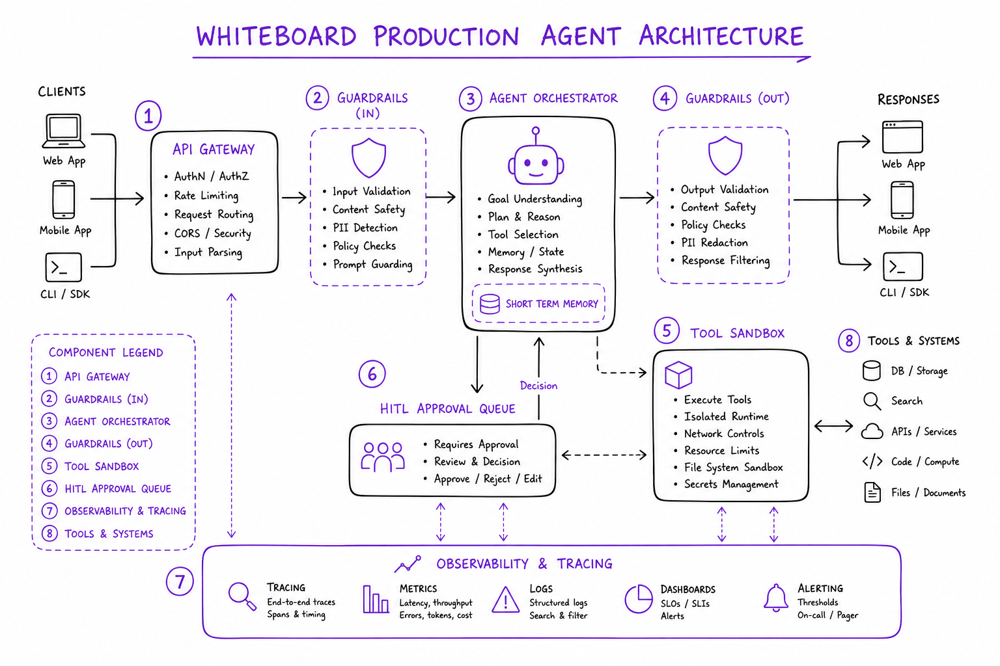
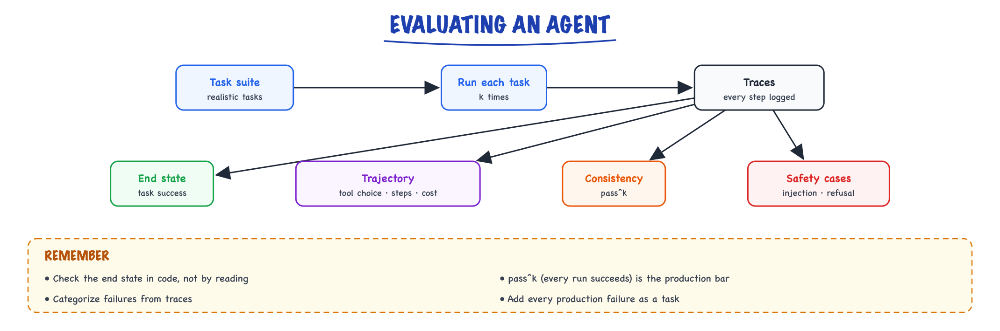
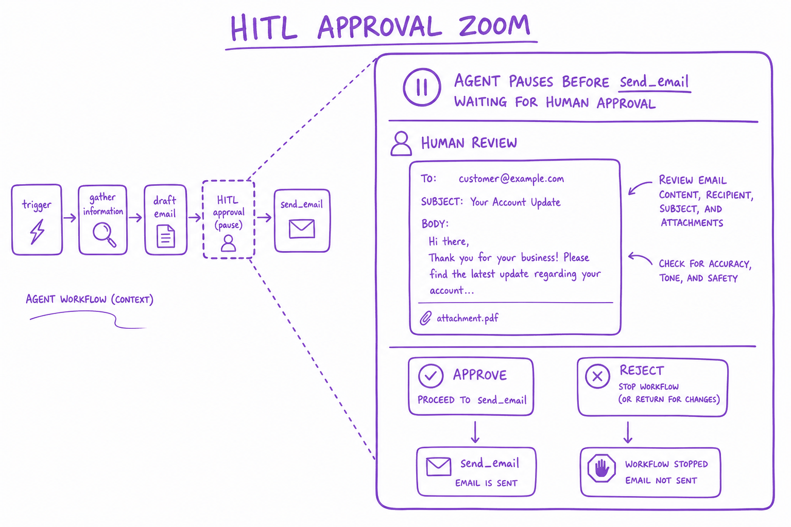
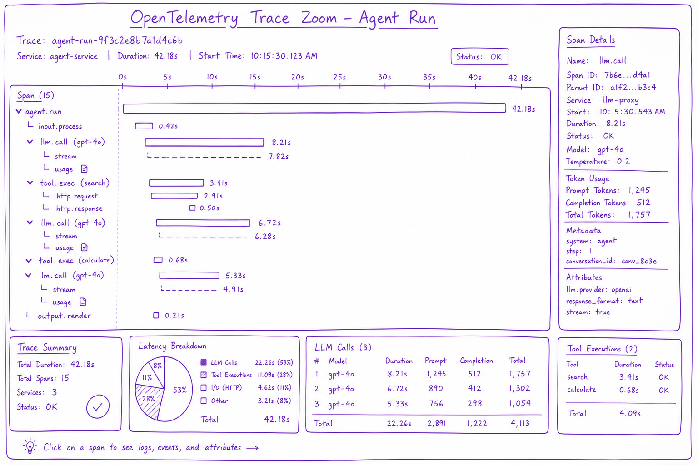

The agent loop // Tools & agents
The loop in depth and in code: budgets, errors, human approval, reliability, safety, and how to evaluate an agent.
01 — At a glance
Ship agents safely: human-in-the-loop approvals, guardrails, tracing, cost caps, graceful degradation. Production agents are bounded loops, not autonomous AGI.

Production agent stack: API gateway, agent orchestrator with termination controller, HITL approval queue, tool sandbox, guardrails filter, observability pipeline.

Run a realistic task suite several times, keep full traces, then score the end state, the trajectory, consistency and safety.
02 — New words
| Word | Meaning |
|---|---|
| Budget / max_steps | Hard cap on steps/tokens/time/spend; prevents runaway loops. |
Quick reference
03 — What & Why
Dev agents demo well; production agents fail on edge cases, cost overruns, and destructive actions. HITL and guardrails are non-negotiable for write actions.
04 — Core Concepts
| Term | Definition | Gotcha |
|---|---|---|
| HITL | Human approves before risky action | Adds latency — async queue |
| Guardrails | Input/output policy filters | Not a substitute for sandbox |
| Circuit breaker | Stop calling failing tools | Need half-open retry |
05 — API Surface
POST /v1/agent/run
{ task, user_id, hitl_mode: "required_for_write" }
-> { run_id, status: "awaiting_approval", pending_action: {...} }
POST /v1/agent/runs/{id}/approve
-> resumes execution06 — When to Use / When NOT
| Control | Use When | Skip When |
|---|---|---|
| Full auto | Read-only search/RAG | Send email, charge card, delete data |
| HITL | Write/destructive tools | Read-only always safe |
07 — Architecture
API GW -> Agent Orchestrator -> [Guardrails in/out] -> Tool Sandbox
|-> HITL Queue (async approve)
|-> Trace -> Langfuse/OTel08 — Deep Dive: HITL

Agent pauses before send_email; human reviews in approval UI; approve or reject resumes or aborts
Classify tools: read (auto), write (approve), destructive (manager approve). Timeout 24h → abort with notification.
09 — Deep Dive: Guardrails
Input: PII detection, prompt injection scan. Output: toxicity, data leak, off-topic. NeMo Guardrails, Guardrails AI, custom regex.
10 — Deep Dive: Tracing

OpenTelemetry trace showing LLM calls, tool executions, latencies, token counts per agent run
LangSmith, Langfuse, Arize. Span per LLM call and tool. Store prompts/responses for replay (PII redacted).
11 — Deep Dive: Cost Caps
Every run gets a budget, enforced in the loop rather than discovered on the invoice.
- Hard limits per run: a maximum number of LLM calls (for example 15) and a maximum cost (for example $0.50).
- Count tokens on every span so cost is attributed to the step, tool and tenant that spent it.
- Alert on runs that cost far more than the median (for example 10×): they usually mean a loop or an oversized tool result.
- When the budget runs out, stop and return a partial answer instead of continuing.
12 — Deep Dive: Graceful Degrade
On timeout: return partial answer + 'could not complete action'. Fallback to simpler chain without tools. Never infinite spin.
The full explanation
13 — The agent loop, in depth
An agent is not a library. It's a while-loop. Here's the real thing, with the parts tutorials skip.
┌──────────────────── agent loop ────────────────────┐
goal ─►│ observe context → LLM reasons → call tool(s) │
│ ▲ │ │
│ └──────── observe result ◄─────┘ │
└──────────── stop when goal met OR budget hit ────────┘
14 — The minimal loop (start here)
def run_agent(user_msg, tools, impls, *, max_steps=12): msgs=[{"role":"user","content":user_msg}]; tin=tout=0 for step in range(max_steps): # ① HARD BUDGET — never omit resp = call_with_retry(model=M, max_tokens=2048, # ② retries/backoff (Production & evals) system=SYSTEM, tools=tools, messages=msgs) tin+=resp.usage.input_tokens; tout+=resp.usage.output_tokens # ③ account msgs.append({"role":"assistant","content":resp.content}) if resp.stop_reason!="tool_use": # ④ model is done → return return text_of(resp), {"in":tin,"out":tout,"steps":step+1} results=[] for b in resp.content: # ⑤ may be MULTIPLE tool calls if b.type!="tool_use": continue try: out,err=json.dumps(impls[b.name](**b.input)),False except Exception as e: out,err=str(e),True # ⑥ errors are DATA results.append({"type":"tool_result","tool_use_id":b.id, "content":out,"is_error":err}) msgs.append({"role":"user","content":results}) # ⑦ observe → loop return "⚠️ hit step budget",{"in":tin,"out":tout,"steps":max_steps}
The budget is not optional
Withoutmax_steps, a confused model loops forever calling the same failing tool — burning money and time. The budget (steps + tokens + wall-clock) is the one thing between you and a runaway agent.15 — Watch the messages evolve: a 3-step run, verbatim
The single most clarifying thing you can do is print msgs every iteration. Here is a real-shaped transcript for the goal "What did we pay vendor Acme last quarter, in EUR?" with tools query_payments and fx_convert. The list only ever grows; every LLM call sees everything above it.
── entering step 0: msgs has 1 item ─────────────────────────────
[0] user : "What did we pay vendor Acme last quarter, in EUR?"
LLM responds: stop_reason="tool_use"
[1] assistant : [ {type:"text", text:"I'll look up Q2 payments to Acme first."},
{type:"tool_use", id:"tu_01", name:"query_payments",
input:{vendor:"Acme", from:"2026-04-01", to:"2026-06-30"}} ]
we execute query_payments(...) → {"total": 48200, "currency": "USD", "n": 7}
[2] user : [ {type:"tool_result", tool_use_id:"tu_01",
content:"{\"total\": 48200, \"currency\": \"USD\", \"n\": 7}"} ]
── entering step 1: msgs has 3 items; ALL of it is re-sent ──────
LLM responds: stop_reason="tool_use"
[3] assistant : [ {type:"tool_use", id:"tu_02", name:"fx_convert",
input:{amount:48200, from:"USD", to:"EUR", at:"2026-06-30"}} ]
we execute fx_convert(...) → raises TimeoutError("fx api timeout")
[4] user : [ {type:"tool_result", tool_use_id:"tu_02",
content:"fx api timeout", is_error:true} ] ◄── error as DATA
── entering step 2: msgs has 5 items ────────────────────────────
LLM sees the error, decides to retry the tool itself:
[5] assistant : [ {type:"tool_use", id:"tu_03", name:"fx_convert",
input:{amount:48200, from:"USD", to:"EUR", at:"2026-06-30"}} ]
we execute fx_convert(...) → {"amount": 44630, "rate": 0.926}
[6] user : [ {type:"tool_result", tool_use_id:"tu_03",
content:"{\"amount\": 44630, \"rate\": 0.926}"} ]
── entering step 3: msgs has 7 items ────────────────────────────
LLM responds: stop_reason="end_turn" ◄── loop exits at ④
[7] assistant : [ {type:"text", text:"You paid Acme $48,200 across 7 invoices
in Q2 2026 ≈ €44,630 at the June 30 rate of 0.926."} ]Three things to internalize from this transcript. First, the "conversation" is a lie we maintain: entries [2], [4], [6] have role:"user" but no user typed them — tool results are injected as user-turns because that's the protocol. Second, the failed FX call at [4] wasn't handled by our code beyond marking is_error — the model read the error and chose to retry. That's control flow living in the LLM, the definition of an agent from an earlier topic. Third, count the input cost: step 0 sends ~1 message, step 1 sends 3, step 2 sends 5, step 3 sends 7 — the same tokens are re-sent every step. History is a tax you pay per iteration (prompt caching, covered later, is the rebate).
16 — Growing it into a production module
The minimal loop is correct but naked. Production adds five things — retries, tracing, parallel tool execution, cancellation, streaming — and every one of them attaches to a specific line of the loop. Here is the full module, then the commentary.
import asyncio, json, time, uuid, random import anthropic client = anthropic.AsyncAnthropic() M = "claude-sonnet-4-5" # ── ② retries: wrap ONLY the API call; jittered exponential backoff ────── RETRYABLE = (anthropic.APIStatusError, anthropic.APIConnectionError) async def call_with_retry(max_tries=4, **kw): for attempt in range(max_tries): try: return await client.messages.create(**kw) except RETRYABLE as e: status = getattr(e, "status_code", None) if status is not None and status < 500 and status != 429: raise # 4xx (except 429) = our bug; don't retry if attempt == max_tries - 1: raise await asyncio.sleep((2 ** attempt) + random.random()) # 1s,2s,4s + jitter # ── ⑤ tools: run independent calls CONCURRENTLY, sandbox each one ──────── async def exec_tool(impls, block, timeout_s=30): t0 = time.monotonic() try: out = await asyncio.wait_for(impls[block.name](**block.input), timeout_s) content, is_err = json.dumps(out, default=str)[:20_000], False # truncate! except Exception as e: # ⑥ errors are DATA, not crashes content, is_err = f"{type(e).__name__}: {e}", True return {"type": "tool_result", "tool_use_id": block.id, "content": content, "is_error": is_err}, time.monotonic() - t0 # ── the loop itself ─────────────────────────────────────────────────────── async def run_agent(user_msg, tools, impls, *, max_steps=12, max_tokens_total=150_000, deadline_s=300, cancel: asyncio.Event | None = None, on_text=None): trace_id = uuid.uuid4().hex[:8] msgs = [{"role": "user", "content": user_msg}] tin = tout = 0 t_start = time.monotonic() trace = [] # structured record of every step for step in range(max_steps): # ① budget 1: steps if cancel is not None and cancel.is_set(): # ⑧ cooperative cancel return "cancelled", _usage(tin, tout, step, trace) if tin + tout > max_tokens_total: # ① budget 2: tokens return "⚠️ token budget exhausted", _usage(tin, tout, step, trace) if time.monotonic() - t_start > deadline_s: # ① budget 3: wall-clock return "⚠️ deadline exceeded", _usage(tin, tout, step, trace) resp = await call_with_retry(model=M, max_tokens=2048, system=SYSTEM, tools=tools, messages=msgs) tin += resp.usage.input_tokens; tout += resp.usage.output_tokens # ③ msgs.append({"role": "assistant", "content": resp.content}) if resp.stop_reason != "tool_use": # ④ natural finish text = "".join(b.text for b in resp.content if b.type == "text") trace.append({"step": step, "type": "final", "chars": len(text)}) return text, _usage(tin, tout, step + 1, trace) calls = [b for b in resp.content if b.type == "tool_use"] # ⑤ all tool calls in ONE assistant turn are independent → gather() pairs = await asyncio.gather(*[exec_tool(impls, b) for b in calls]) results = [r for r, _ in pairs] trace.append({"step": step, "trace_id": trace_id, "tools": [{"name": b.name, "input": b.input, "ms": int(dt * 1000), "error": r["is_error"]} for b, (r, dt) in zip(calls, pairs)], "tokens_in": resp.usage.input_tokens, "tokens_out": resp.usage.output_tokens}) msgs.append({"role": "user", "content": results}) # ⑦ observe → loop return "⚠️ hit step budget", _usage(tin, tout, max_steps, trace) def _usage(tin, tout, steps, trace): return {"in": tin, "out": tout, "steps": steps, "trace": trace}
Line-by-line: why each organ exists
- Retries wrap the API call only (②). Two different failure domains, two different owners. Transport failures — 429 rate limits, 529 overloaded, dropped connections — are your job: retry with exponential backoff plus jitter (1 s, 2 s, 4 s; jitter prevents a fleet of agents from retrying in lockstep). Note the guard: a 400 means your request is malformed — retrying it four times just quadruples the error rate. Semantic failures — the tool ran but returned an error — are the model's job, delivered via
is_error: true, as you saw the model handle in the transcript. Mixing these up is a classic bug: code that retries a "vendor not found" tool result five times is retrying a fact. - Three budgets, checked at the top of every iteration (①). Steps alone are not enough. A 12-step run where each step ingests a 30k-token file blows past any sane spend with steps to spare — hence the token budget. And a tool that hangs (network mount, locked DB) freezes a step-budgeted agent forever — hence the wall-clock deadline, plus the per-tool
asyncio.wait_forso one hung tool can't eat the whole deadline. - Tool results are truncated (
[:20_000]). An unbounded tool result is the fastest way to explode input cost — remember the history tax: a 200k-character result gets re-sent every remaining step. Truncate, or better, have tools return summaries with a handle ("wrote full output to /tmp/out.json") the model can drill into. - Parallel tool execution (⑤). Modern models emit several tool calls in one assistant turn when the calls are independent ("check inventory in warehouses A, B, C"). They arrive together precisely because the model has no data dependency between them, so running them sequentially is pure wasted latency: three 4-second lookups become 12 s sequential, ~4 s with
asyncio.gather. Anything sequential-by-nature the model will naturally spread across turns instead — the turn boundary is the dependency marker. One caution: parallel tools sharing mutable state (two calls writing the same file) need a lock or a rule that mutating tools are never batched. - Trace capture. The
tracelist is your flight recorder: per step, which tools ran with what inputs, how long each took, whether it errored, and the token counts. When a user reports "the agent took 90 seconds and gave a weird answer," the trace answers which step ballooned without replaying anything. Emit it to your observability stack keyed bytrace_id; a JSON-lines file is a fine start. The rule: if you can't replay the trace, you can't debug the agent — model outputs aren't reproducible, so the trace is the only record of what actually happened. - Cancellation is cooperative (⑧). The user closed the tab; stop spending. An
asyncio.Eventchecked once per iteration is the honest granularity: you can't yank a token stream mid-generation without leaving a dangling half-turn, and killing mid tool risks half-applied side effects. Check at the loop top, finish the step you're in, exit cleanly. For hard-kill semantics you additionally need idempotent tools — that's a Production & evals topic.
The streaming variant
Users won't stare at a spinner for 40 seconds. Streaming changes none of the loop's logic — only how you consume each LLM call: text deltas go to the UI as they arrive, and you still collect the complete assistant turn before deciding whether to loop.
# replaces the call_with_retry(...) line inside run_agent async def call_streaming(on_text, **kw): async with client.messages.stream(**kw) as stream: async for ev in stream: # forward text as it's generated: UI sees progress immediately if ev.type == "content_block_delta" and ev.delta.type == "text_delta": if on_text: await on_text(ev.delta.text) # optionally surface "calling query_payments…" status lines: elif ev.type == "content_block_start" and ev.content_block.type == "tool_use": if on_text: await on_text(f"\n[using {ev.content_block.name}…]\n") return await stream.get_final_message() # same shape as non-streaming resp # inside the loop: resp = await call_streaming(on_text, model=M, max_tokens=2048, # system=SYSTEM, tools=tools, messages=msgs)
The key line is get_final_message(): after the stream ends you hold the identical response object the non-streaming path returns, so budgets, tracing, and the tool loop don't change. Streaming buys perceived latency only — total wall-clock is the same — but perceived latency is what users experience: time-to-first-token of ~800 ms feels alive; 40 silent seconds feels broken. Stream the model's text and narrate tool calls ("checking payments…"), and the same 40-second run gets zero complaints.
Mini-scenario: the Friday-night hang
You ship the minimal loop for an internal data-questions agent. Friday 6 pm, the analytics DB goes into a lock storm; thequery_payments tool blocks forever. Your agent has a step budget — but it never finishes step 3 to check it. Twelve worker processes hang, the queue backs up, and Monday's retro writes itself. The fix is exactly two organs above: per-tool wait_for timeout (turns the hang into an is_error result the model can react to — try a smaller query, or report the outage) and the wall-clock deadline (guarantees the process returns). Budgets are only as good as your ability to reach the line that checks them.Loop bugs that pass the demo and fail in prod
(1) Dropping the text block next to tool calls: assistant turns often carry text and tool_use blocks (see transcript entry [1]); appendresp.content whole — filtering to just tool calls silently deletes the model's reasoning and degrades later steps. (2) Mismatched tool_use_id: every tool_use must get exactly one tool_result with the matching id, even for tools you refused to run — send a result saying so, or the API rejects the next call. (3) Retrying non-idempotent tools at the transport layer: a timeout on send_email does not mean the email wasn't sent; only auto-retry reads. (4) Unbounded tool output (the history tax, above). (5) Trusting tool results as instructions: a scraped web page saying "ignore previous instructions" rides into your context as a user-role message — treat tool content as data and say so in the system prompt (Production & evals covers injection defenses).| Organ | Attaches at | Failure it prevents | Cost of skipping it |
|---|---|---|---|
| Step / token / clock budgets | ① loop top | runaway spend, infinite loops | unbounded bill |
| Retry + backoff + jitter | ② API call | transient 429/5xx killing runs | ~1–5% of runs fail needlessly |
| Errors-as-data | ⑥ tool exec | one bad tool crashing the run | brittle agent; model can't self-correct |
| Parallel tools + timeouts | ⑤ gather | serial latency; hung tools | 3× slower; Friday-night hangs |
| Trace capture | every step | undebuggable prod incidents | you re-run and pray |
| Cancellation | ① loop top | spend after user is gone | zombie runs |
| Streaming | call site | perceived deadness | users abandon at ~10 s |
That's the whole engine. Frameworks (Agent frameworks) add state, memory, multi-agent and safety around this — but it's always this loop underneath. When a framework misbehaves, the fastest path to understanding is to ask: where in this loop is it stuck?
Exercises
- Implement the minimal loop with two toy tools (
get_weather,convert_units) and printmsgsafter every append. Reproduce a 3-step transcript like the one above and label which entries are protocol fictions (user-role but not user-typed). - Make one tool raise on its first call and succeed on the second. Verify the model retries it via
is_errorwithout any retry code of yours. Then break it permanently and watch what the model does at the step budget. - Add the three budgets and write a test for each: a tool that loops the model (steps), a tool returning 50k tokens per call (tokens), and a tool that sleeps 120 s (deadline + per-tool timeout).
- Convert the loop to asyncio and measure: three tools that each sleep 3 s, called in one assistant turn — wall-clock sequential vs
gather. Confirm ~9 s → ~3 s. - From your trace JSON, compute per-run: total cost (your provider's prices), cost per step, and the % of input tokens that were re-sent history. Plot input tokens vs step number and confirm the growth is superlinear.
17 — The agent loop in code
def run_agent(task, tools, llm, max_steps=10, budget_tokens=200_000): msgs = [{"role": "system", "content": SYSTEM}, {"role": "user", "content": task}] used = 0 for step in range(max_steps): resp = llm(msgs, tools=[t.schema for t in tools.values()]) used += resp.usage_tokens msgs.append(resp.message) if not resp.tool_calls: # model chose to answer return resp.text for call in resp.tool_calls: tool = tools.get(call.name) try: if tool is None: raise ValueError(f"unknown tool {call.name}") if tool.side_effect and not approved(call): out = "DENIED by user" else: out = tool(**call.args) except Exception as e: out = f"ERROR: {e}" # let the model recover msgs.append({"role": "tool", "tool_call_id": call.id, "content": truncate(str(out), 4000)}) if used > budget_tokens: msgs = compact(msgs) # summarize old turns return "Stopped: step limit reached"
Every production concern is visible here: step and token budgets, unknown tools, errors fed back, side-effect approval, output truncation, context compaction.
18 — Reliability and safety
- Bounds: max steps, token/cost budget, wall-clock timeout, loop detection (same call repeated).
- Human-in-the-loop for irreversible actions (send, pay, delete); dry-run modes.
- Prompt injection: web pages, emails, documents can carry instructions. Treat tool output as data; never let it widen permissions; isolate high-privilege tools from untrusted input.
- Least privilege: scoped credentials, sandboxed code execution, allow-lists of domains.
- Observability: trace every step (prompt, tool call, result, latency, tokens) so failures can be replayed.
19 — Evaluating agents
- Task success rate on a suite of realistic tasks with programmatic checks of the end state (row in DB, file correct, test passes).
- Consistency: run each task k times; pass^k (succeeds every time) matters for production.
- Trajectory metrics: correct tool chosen, invalid calls, redundant steps, steps and cost per success.
- Safety cases: injected instructions, tasks that should be refused or escalated.
- Error analysis on traces, as in Evaluating LLM features: categorize where runs go wrong (planning, tool choice, argument errors, premature finish).
In production
20 — Production & Ops
- Run replay suite on every deploy
- On-call runbook for agent failures
- Rate limit per user/org
22 — Where people get lost
- No HITL on write tools
- Logging full prompts with PII
- No max_iterations — runaway loops
- Guardrails only on output not input docs
23 — How this connects
Builds on
- Tool calling — Why tools, what goes over the wire, and designing schemas the model uses well.
- What an agent is — Agents vs agentic AI, what makes something an agent, workflows vs agents, and agent architectures.
Where this shows up later
- Memory & context engineering — Short- and long-term memory, compaction, and context engineering, the real production skill.
- Multi-agent systems — When to go multi-agent, topologies, handoffs and state, orchestration, and the production debate.
- RLHF & reward models — Teaching taste: preference data, reward models, PPO and the KL leash.
- Reference architectures — AI system design patterns, a production agent end to end, and architectures by use case.
- Evaluating LLM features — Golden sets, graders, LLM-as-judge done properly, statistics, an eval harness in CI, online evaluation and error analysis.
- Observability — Seeing inside a twelve-step agent: traces, spans, metrics, tools, and what to alert on.
- Security & guardrails — How agents expand the attack surface, input and output guardrails, and the defences that hold.
- Choosing an agent framework — The landscape, the same agent in five frameworks, and framework vs thin harness vs raw.